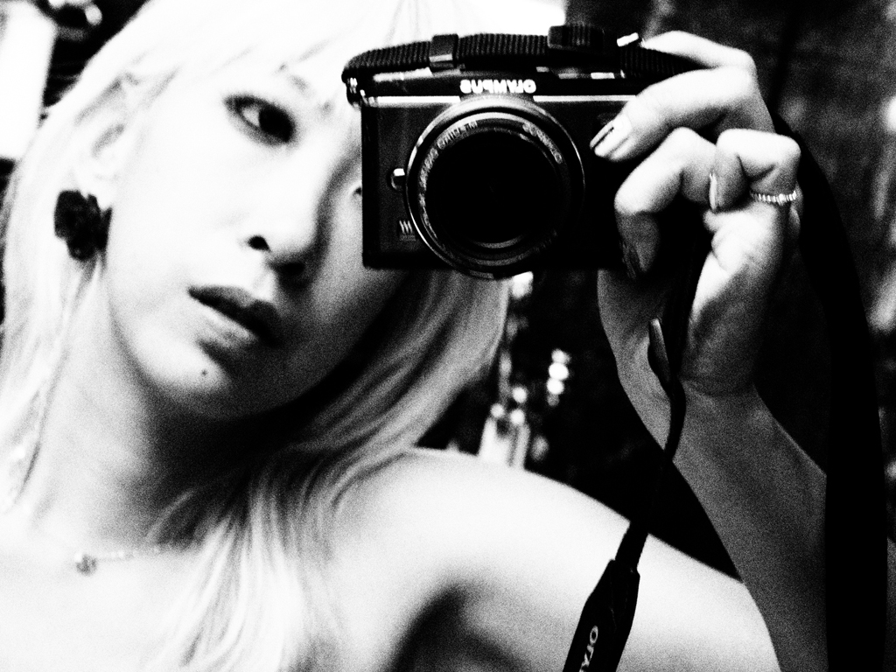
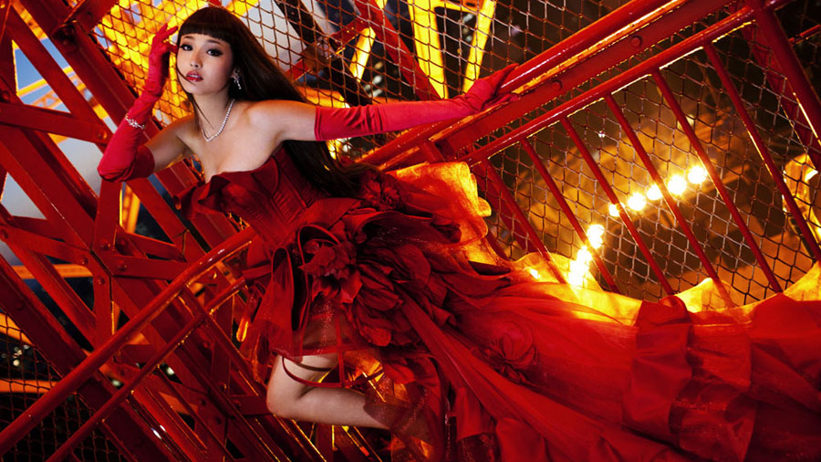
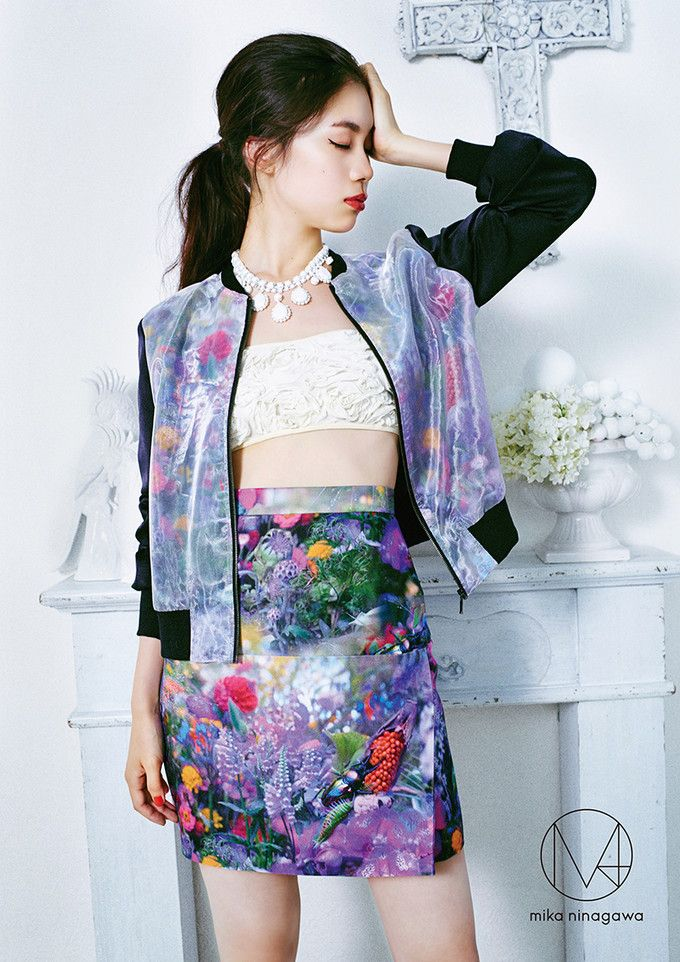
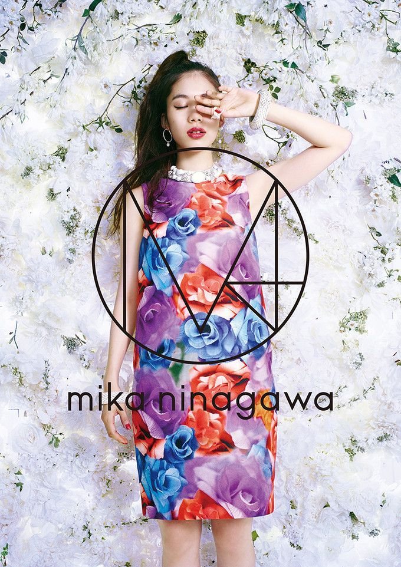
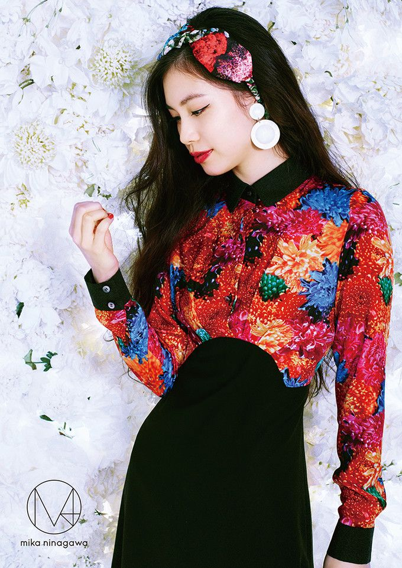
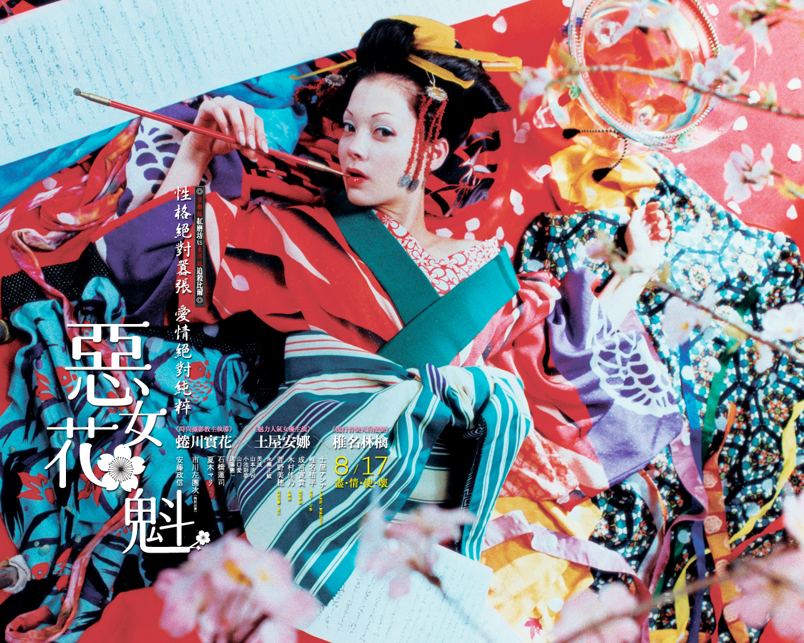

Enter Mika Ninagawa's residence-slash-office and you're in for a treat―behind the unassuming facade, hidden from the outsiders' eyes, is a small wonderland. Covered floor to ceiling in its owner's signature imagery the place is a screenshot of her saturated blue-red-flower-fish works, even the air conditioner is masked with photo paper. I pull my camera out, turn the dial, click, click... Error. It's dead. I guess some things are not meant to be captured. Besides, who could illustrate Ninagawa interview better than the award winning photographer, acclaimed filmmaker and the artist in her own right herself. Her ever present partner, Hidetake Kanaya, nods. Ninagawa lights up a cigarette.
> Photographer Mika Ninagawa. Photo courtesy of the artist.
AB :You're are a prominent figure in both, commercial and art worlds.
MN :I guess it's quite rare for Japan, but I enjoy working in both fields. Commissioned work is like a training for me―I'm often asked to do something I'd never think of myself, which eventually benefits my artworks. Some arty people don't like me because I do commercial work, but I enjoy both.
AB :So you don't prioritize.
MN :If I were to choose one I'd pick art, that's where I come from. However, I try to translate even my own work into an easily accessible form. I love both really.
AB :Your latest movie, Helter Skelter, is about cut-throat world of show business. As a person who makes a good living out of it, why did you choose to direct it?
MN :I thought it's a very interesting theme. I decided to direct it seven years ago. Back then I wasn't that successful commercially. I was actually quite confused when I finished filming. Am I in denial? I chose this theme because I sympathized with the character, but at the end it was hard to even advertise the film as the process mimics the story. I even had to re-think how to take photos. I completely understand why Erika had to take a break afterward.
AB :Did you consider Erika for the lead from the beginning?
MN :Erika was my first choice, but there were some difficulties in casting her at the time. Considering other options I only became more confident it has to be her.
AB :Excellent choice. Bad behavior is an integral part of the celebrity phenomenon, in Japan however celebrities are expected to behave like model citizens.
MN :I think it's a part of the Japanese DNA to fear the unconventional. When “Helter Skelter” started to receive mixed reaction I wasn't that concerned, but I guess it's tougher on the actors. Must be very stressful to face all this criticism. What you hear about Erika in the media is just a small part of who she is, on the set she was extremely giving and dedicated.
AB :I think it's only natural to act obnoxiously when you're stressed out. It's a part of the package. In Japan however even a slight misstep may end someone's career overnight. Why is that?
MN That's so true, I wonder why. Is it an Asian thing? I think actors should be judged by their acting.
HK :Modest behavior is a part of the Japanese tradition, it's expected from public figures. In sumo for example it's called “Shin Gi Tai,” sumo wrestlers are not only required to be strong physically, but also be discreet. People are commonly judged by their personality and behavior, it's unrelated to one's profession. I believe not all sumo wrestlers were modest and there must've been some crazy kabuki actors in Edo Era. I think this trend became even stronger over the last 10 years, after the bubble burst people crave for the role models they can rely on. They need a solid mental state to restore their confidence.
MN: It seemingly becoming worse in the past 10 years.
AB: Wasn't the WWII a breaking point?
MN :I'd say bubble burst.
HK: Japan had two “identity crises”, after the war and after the bubble. With rapidly growing economy we briefly regained our confidence lost in the war, only to lose it again after the bubble burst.
AB :Japanese media seems to be overcrowded with tarento, what are your thoughts on that?
MN :In “Helter Skelter” Lilico is an absolute star. The story takes place in the '90s, when there were still some real stars. It's difficult for me to translate this comic into present because there are no stars left. This country seems to reject them. There are some idols and tarento who are nice people, but rather androgynous, lacking the real character. I guess people can't stand true stars because they are so different, they'd rather watch some stupid proxies they can sympathize with. I don't watch TV myself, it's too painful. Women are always treated like assistants. Japanese men like weak, submissive women, it makes them feel stronger, more confident. Women like Anna Tsuchiya don't get much attention because she's too strong. Many girls like me because I'm different, a rare example. I wish they free themselves from these centuries old customs already. I don't care about the guys, but it's my duty to help women to become happier. I once talked to a famous newscaster and asked her what she thinks is the key to the long lasting carrier, she answered “it's important to make men think she's great, but not better than me.” It's crazy, but men often don't see it! Japanese customs are strange, especially when you come back from abroad... [Sigh]
AB: Yes, Girl power seems to be an underlying layer in most of your works. Do you feel the situation is gradually changing? Are women more in control these days?
MN: Hard to say. In fashion men are minority. Only when I step outside I realize how rare my case is and how difficult it is for other women. I want to change it. I hope my work will encourage these women. I won't go fighting for women's rights though! We start with small things, like clothes... tights to look formal, or I'm too old for this outfit... I want to free them from this burden.
AB :Men play secondary roles in your works.
MN :There are some boys in my photos. [Smiles] I only directed two films so far and chose the themes I can relate to. Women's stories written by women. I think the third film is also going to be a woman's story. Also, I don't really need a man in my life now, I have my son. Men are like sweets to me, if I'm madly in love I'd shoot a love story. I'm like that, my works reflect my feelings. [Laugh]
AB :What type of men do you like?
MN :[Laugh] He doesn't have to be rich, or extremely smart, but he's got to be sexy. I just want him to flatter me sometimes. That's why I often get bad boyfriends! [Laugh]
AB :How did you come about the saturated palette you're now famous for?
MN :It's me, look around! I like these colors. I always find it difficult to answer why I like what I like. I was born this way. I don't try to achieve a certain color, that's how the world looks to me. It always ends up like this, naturally.
AB :Is red your favorite color?
MN :My most favorite. [Smile]
AB :There is a preconception that you owe much of your success to your father. While it may be true to a degree, I think if anything, the pressure of it made your life more difficult.
MN :Well, I was born Yukio Ninagawa's daughter. From very early age it made me question myself, who am I, what do I want to do? To a degree it shaped me. My debut was criticized for being influenced by my father. Nowadays I don't get it much anymore, but it happened again when I started to shoot movies. I didn't know there were so many film director wannabes! I don't particularly enjoy the experience, but I have to utilize it to get my vision out there. It is better to be envied than to envy others.
AB :You are both established artists now, do you discuss your works?
MN :Not so much, it's awkward. I do watch all his works and so does he. Sometimes, we discuss actors. Movies are not our main work and are easier to talk about. He seems to like that I work really hard.
  AB :Fashion is essential to your work, yet, you don't seem to be overly obsessed with it.
MN: I love fashion! As a woman, not as a creator.
AB: Buy a lot? Shoes of course...
MN: If you open my closet it'll explode! Boom! [Laugh] I wear clothes to feel different. Some people in fashion become indifferent to it, but I really enjoy taking photos of the clothes I love. I don't choose what to shoot for fashion magazines, but movies are different story―I chose an outfit for each scene, empowering it with its beauty.
AB :How much are you involved in art direction?
MN: Definitely for my art works. I choose what to shoot. You can clearly see my taste in my works.
AB: What was the biggest challenge you had to face?
MN: My first film, Sakuran. I was very nervous and spent too much time on unnecessary things, but in a long run I needed this experience. Also, becoming a mother. It's tough! [Laugh]
Sakuran, 2007, Film Committee. Copyright Moyoco Anno/Kodansha. Photo by Mika Ninagawa.
AB :Who among your colleagues do you admire and respect the most?
MN: Kanaya. We've been working together for a long time and can discuss anything. He's been very protective, while pushing me forward. I need him to be next to me when I work.
AB :Perfect match.
MN: It's so rare and fortunate when a man enjoys working for a woman. People are jealous I have such a perfect partner. My crew enjoys working for me because I'm fun to be around. I always try to stay interesting.
AB: How long have you known each other?
HK: About nine years.
MN: Longer than any of my boyfriends! [Laugh]
AB: With Kusama x Louis Vuitton collaboration and Moriyama's retrospective at Tate Japanese art is once again in spotlight, do you think Japanese pop culture stands a chance to match it?
MN: It makes me happy when Japanese artists get the attention they deserve, I'd love to join the club. How do you think Japanese pop culture is perceived abroad?
AB: Well, I guess Takeshi is very much a part of the picture. Miyazaki of course, Kurosawa. Anime, manga, games... The interest is there, but Japan remains very closed. That's the reason I started Gadabout―to shed some light on what's happening over here.
MN: How can I get there?
AB: I thought you are doing pretty well! I guess it's just a matter of time.
MN :I'll try harder.
“Merci! Bonjour!”
MN :That's my son. (The boy storms into the room and dives under the table)
AB :Let's talk about moviemaking. In France for example the government supports local film industry, tax cuts, movie theatre and TV support etc. Do you think similar initiative would help to boost Japanese film industry, or is it simply in the hands of its creators?
MN :Japanese film industry holds only on its creators' love and passion for their films. As a business―forget it! I wish there was some government support, but it's very unlikely. So, we have to find a way around it.
HK: There is a government program, Cool Japan, but it's more of a campaign to push selected companies and has nothing to do with enhancing the real culture.
AB: Do you feel the exploration of uniquely Japanese themes, compared to more outward, cosmopolitan approach of your father's generation, is a step towards self-rediscovery and is here to stay, or just a passing trend?
MN: It's good that people started to appreciate Japanese culture, but many of them have never even left the country. They have nothing to compare it to.
AB :I think now is a perfect time to re-discover the roots, westerners don't want to see Hollywood made in Japan.
MN: I believe the revival of tradition will continue. In fashion the percentage of Japanese products is increasing, it's a good sign. If people regain their confidence it'll make a big difference. I wish the number of people who love Japanese culture increases and they travel more. It's important to study other cultures as well. Staying ignorant of the world won't harvest any originality. It's great to experience other cultures and then return home.
AB: What is your soft spot?
MN :I'm afraid to be disliked by people I like. People close to me, my staff. I don't really care about the audience.
AB :What is your biggest ambition?
MN :First, I want to become a household name in Asia, then―take over the world! I'm thinking of shooting films in China. I want my work to be seen everywhere.
Translation: Mei Matsubara
Interview reference